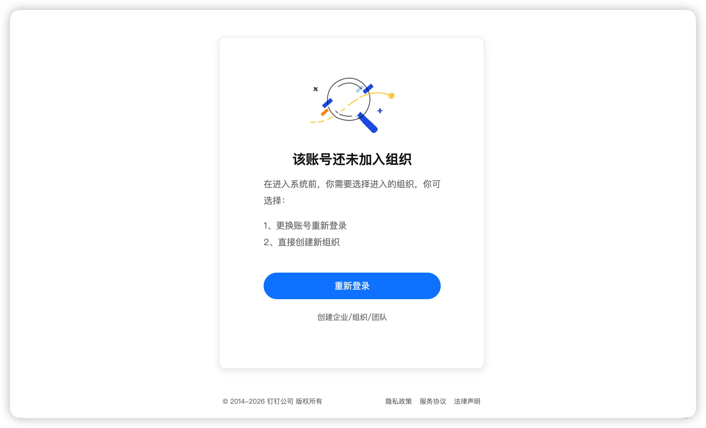
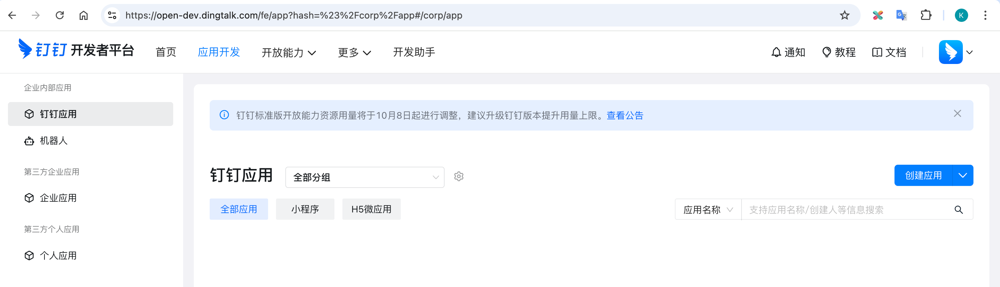
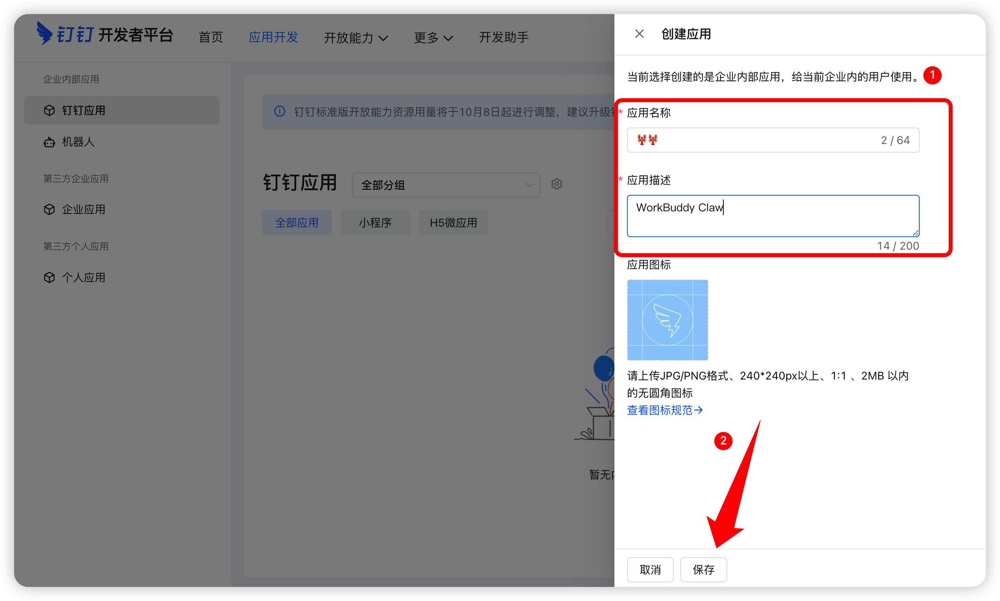
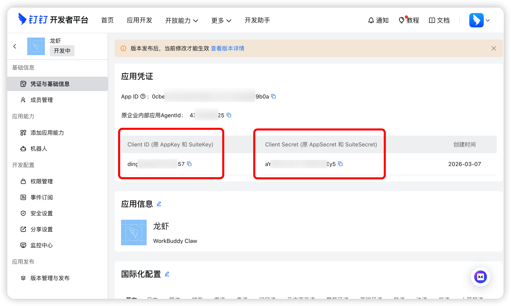
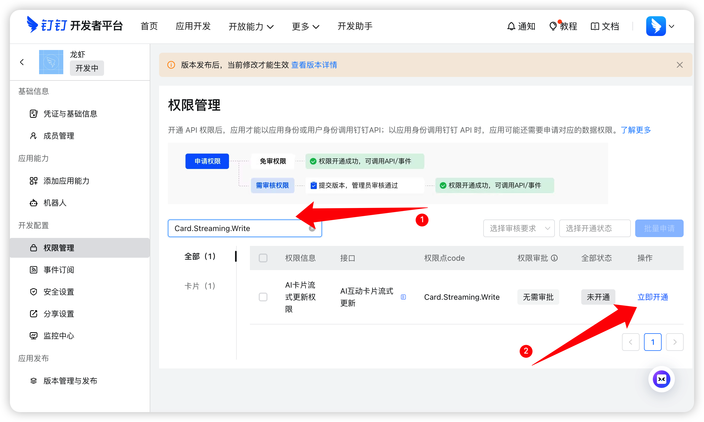
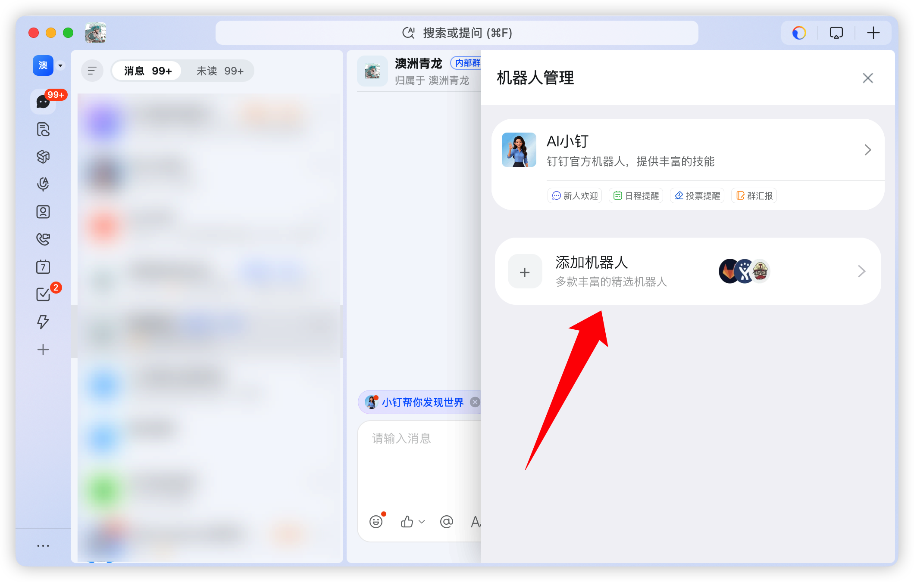

把自己的 Agent
接进钉钉
默认你已经安装、配置并能使用自己的 Agent。本页只教钉钉这一段：找到入口、创建应用、连接、发消息、核对结果。不要求你换成 Hermes 或 WorkBuddy。
开始前：确认两件事
Agent 已能回复
在你平时使用的 Agent 界面发送“请用一句话回答：现在可以接收消息吗？”能得到回复即可。无需重新安装。
选一个不含蓝深业务数据的组织
已加入公司统一 AI 实验组织：在开发者后台选择它。尚未开通、但想先动手：可自行创建空白个人测试组织并选中它。两条路都不要选蓝深主体组织。不同 Agent 使用不同接入方式，先查它是否支持钉钉机器人连接。
下方钉钉后台截图引自 WorkBuddy 钉钉接入指南，仅示范钉钉通用界面；截图中的组织、应用名和菜单样式是示例，实际界面可能更新。WorkBuddy 内部设置截图不用于其他 Agent。
在钉钉开发者后台创建应用
1. 登录并找到“创建应用”
- 打开 钉钉开放平台 ↗，用自己的钉钉账号登录。
- 已有统一 AI 实验组织就选它；尚未开通而你想立即实践，可按页面提示点创建个人企业 / 创建组织，建立不含业务数据的个人测试组织，再切换到这个新组织。不要在蓝深主体组织里创建测试应用。
- 选好组织后，按下图找应用开发 → 创建应用；有些版本先显示“企业内部应用”。


2. 填应用信息并保存
应用名称建议填“姓名 + Agent 测试”，描述写“Agent 接入练习”，并核对当前选中的是统一实验组织或自己的个人测试组织。按图填写后点击保存。不要用蓝深正式业务系统名称制造误认。

给应用加上机器人能力
3. 点击“添加机器人”
在应用详情里的添加应用能力页面，找到机器人 → 添加机器人。如果没自动跳转，可从左侧菜单返回应用能力页。

4. 填机器人信息
填写名称、描述；若界面要求上传头像，就按提示上传。机器人名称建议包含你的姓名，便于以后在钉钉搜索。再按页面提示确认发布机器人能力。

5. 查看应用凭证
在左侧菜单找凭证与基础信息，找到 Client ID（AppKey） 和 Client Secret（AppSecret）。只复制到自己的 Agent 连接器配置中，不发群、不放课件、不截图展示真实密钥。

把钉钉应用连接到你的 Agent
这一段不同产品的按钮位置不一样。不要把 WorkBuddy 的“助理设置”或 Hermes 的“Gateway”当作每个人都会看到的界面。
6. 先找你的 Agent 的钉钉入口
- 在 Agent 中查找设置 / 集成 / 通道 / 连接器 / 机器人，搜索“钉钉 / DingTalk”；同时查看你所用产品的官方钉钉接入说明。
- 若原生支持钉钉：选择该连接器，照产品界面填写 AppKey、AppSecret。字段可能叫 Client ID、Client Secret，按界面字段说明对应，不要直接套用别的产品配置文件。
- 若没有钉钉入口：这不是漏点了按钮。需要该 Agent 官方支持的插件或桥接服务；确认支持后才继续。单独拿到 AppKey/AppSecret 不会让任意 Agent 自动接通。
你的 Agent 界面 → 设置/集成/通道 → 搜索“钉钉” → 选择支持的连接器 → 按该产品说明配置
7. 配对消息接收方式
在连接器里先确认支持的是Stream / WebSocket 长连接，还是HTTP 回调；然后在钉钉应用的机器人配置 → 消息接收配置选一致的模式。
Stream / WebSocket
通常不需要公网回调地址。在 Agent 连接器中填应用凭证并启动，查看连接状态。是否还要开通接口权限，按该连接器官方说明。
HTTP 回调
连接器需提供可被钉钉访问的 HTTPS 地址，并按其文档配置签名/AES/Token 等。没有公网可达地址时，不要只切换按钮就宣称接通。

8. 按连接器文档开通必要权限
如果 Agent 官方接入文档列出必须的钉钉权限，在应用左侧权限管理里逐项搜索并开通。权限名称以该 Agent 的实际功能为准；参考教程列出的 Card.Streaming.Write、Card.Instance.Write、qyapi_robot_sendmsg 是其功能需求，不是所有 Agent 的统一清单。

发布应用，别停在“机器人已添加”
9. 创建并发布版本
- 在应用页面找查看版本详情。
- 填写版本说明，点击确认发布；等待审批或发布结果。
- 检查应用对当前测试组织的人员可见。发布状态、可见范围没通过，其他同事通常搜不到机器人。


先私聊，再在当前测试组织的群里 @机器人
10. 私聊搜索机器人
切回刚才创建应用的组织的钉钉客户端，在顶部搜索框输入你给机器人起的名称，点进去发送：“请回复：钉钉连接成功”。不能只凭连接器绿灯判断。

11. 添加到实验测试群
确保群的归属组织与创建机器人的组织相同。打开群右上角设置 → 机器人 → 添加机器人，搜索并添加刚才的机器人；随后在群里 @机器人 发送同样的测试语句。




12. 用无敏感信息的小任务验收
准备自己编造的练习数据，只读提问：“按产品汇总练习表中的销量，列出数据行数与异常行，不修改原文件。”先确认这个 Agent 确实能接收附件或访问你的练习文件；不支持附件时不要假装它已读表，可改为在消息里粘贴几行示例数据。人工核对合计、行数和来源。别把蓝深业务文件发给实验机器人。
找不到按钮或没有回复？
看不到“应用开发 / 创建应用”
确认开发者后台切换到了刚才创建应用的组织；界面若更新，可搜索“企业内部应用”。如果统一实验组织未开通，可先按上方图 0 建个人测试组织并选中它，不要切到蓝深主体组织。
能看到机器人，但私聊不回复
检查应用是否发布、可见范围、AppKey 与 AppSecret 是否属于同一个应用、Agent 连接器是否运行、钉钉消息接收模式是否匹配。查看连接器日志时不要公开密钥。
私聊成功，但群里不回复
检查群归属是否与机器人应用所属组织相同、机器人是否确实加入该群，以及发送消息时是否正确 @机器人。
Agent 页面里根本没有钉钉入口
不是人人都有原生钉钉通道。查所用 Agent 的官方插件/桥接方案；没有受支持的连接器时，先停在“钉钉应用已创建”，不要照抄别的 Agent 的配置声称接入成功。
能聊天，但读取不了练习文件或真实系统
聊天连接不等于文件访问或业务系统授权。先确认该 Agent 的附件能力、文件路径和实际数据来源。实验组织不会自动访问蓝深主体组织。
钉钉后台截图来源：WorkBuddy 接入钉钉指南 ↗。截图为公开教程示例，不包含你的应用凭据；产品专属配置以各自官方文档为准。